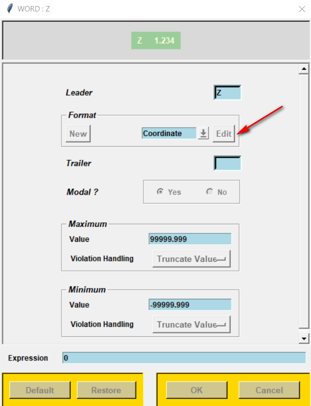
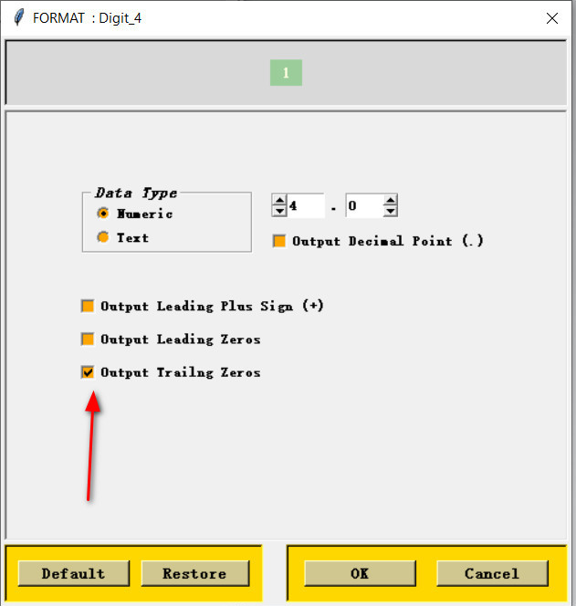
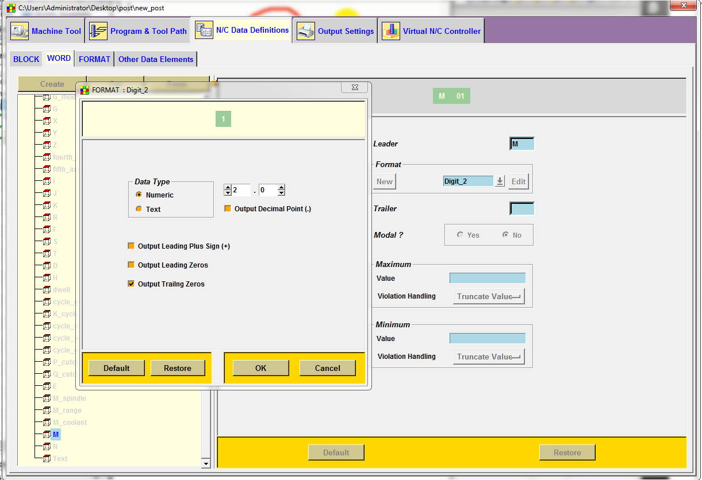
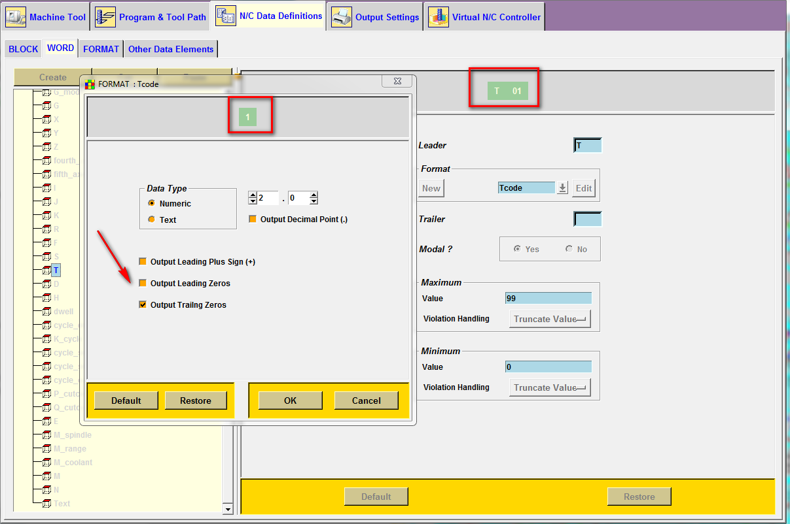
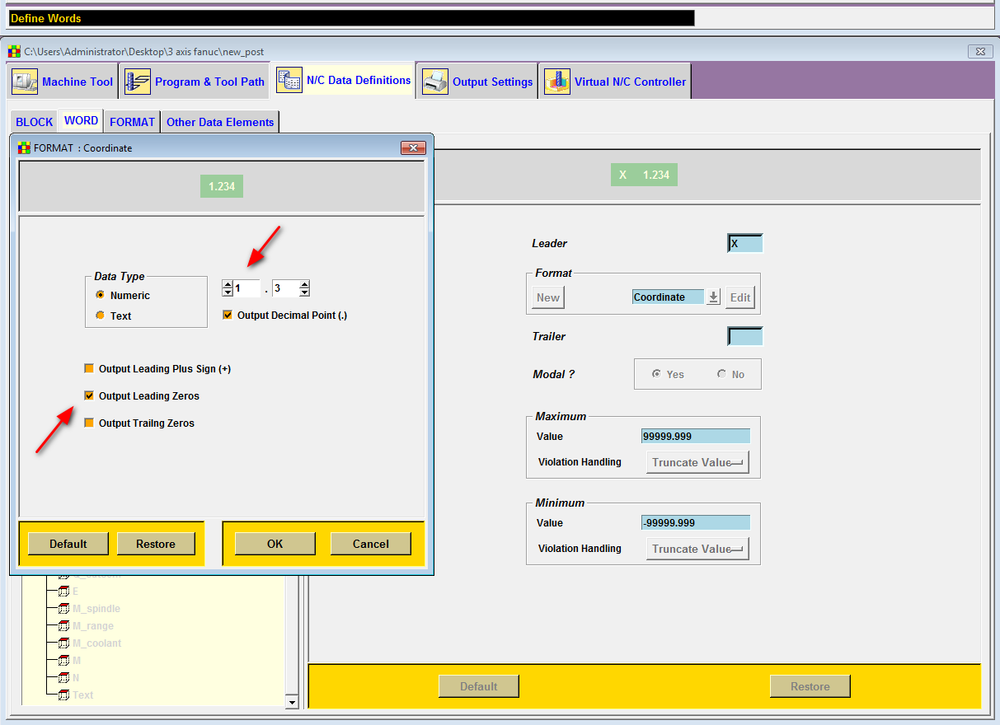

Trước và sau
N0001
M01
T01
X0.5N1T7M6
G43H7Z50.M8
S8000M3
X6.982Y.5I-7.J0.0Dấu cách giữa các từ (N1 T7 M6 → N1T7M6) là một cài đặt khác, sẽ có bài riêng.
Cách chỉnh
Mọi bước đều ở tab N/C Data Definitions → WORD. Chọn từ cần sửa (N, M, T, X…), bấm Edit cạnh ô Format để mở hộp thoại định dạng.
Mở Format của một từ
Ví dụ với từ Z: ô Format là Coordinate, bấm Edit. Các từ X, Y, Z thường dùng chung format Coordinate, nên sửa một lần là áp dụng cho cả ba.

Số thứ tự N: bỏ N0001
Chọn từ N, format Digit_4. Bỏ tick Output Leading Zeros. Ô xem trước đổi từ 0001 thành 1.

Lệnh M: bỏ M03 → M3
Chọn từ M, format Digit_2, bỏ tick Output Leading Zeros.

1 thay vì 01.Số dao T: bỏ T01 → T1
Chọn từ T, format Tcode, bỏ tick Output Leading Zeros.

1; ô của từ T chỉ cập nhật sau khi bấm OK.Toạ độ X, Y, Z: bỏ X0.5 → X.5 (tuỳ chọn)
Mở format Coordinate (bước 01). Ảnh dưới là trạng thái mặc định: Output Leading Zeros đang tick. Bỏ tick để 0.5 xuất thành .5.

Giữ tick Output Decimal Point (.) cho format Coordinate. Trên nhiều máy Fanuc, X7 không có dấu chấm được hiểu là 0.007 mm chứ không phải 7 mm. File mẫu ở trên xuất X7. và Z50. là đúng.
Trong các ảnh trên, Trailing Zeros của số nguyên vẫn được tick. Đừng bỏ tick này cho format số nguyên. Sau khi sửa, xuất thử một chương trình có dao T10 và kiểm tra số còn đủ.
Tóm tắt
| Từ | Format | Đổi | Kết quả |
|---|---|---|---|
| N | Digit_4 | Bỏ Leading Zeros | N1 |
| M | Digit_2 | Bỏ Leading Zeros | M3 |
| T | Tcode | Bỏ Leading Zeros | T7 |
| X Y Z | Coordinate | Bỏ Leading Zeros, giữ Decimal Point | Y.5, X7. |
Sau khi sửa: Save post, xuất lại chương trình và so với bảng trên. Giá trị bằng 0 vẫn xuất X0.0 như trong file mẫu.
Giới hạn
Ảnh chụp trên NX 12.0.2 Post Builder với post phay 3 trục Generic. Tên format (Digit_4, Tcode…) có thể khác nếu post của bạn tạo từ thư viện máy khác; hãy chọn từ trước rồi xem format nó đang dùng.